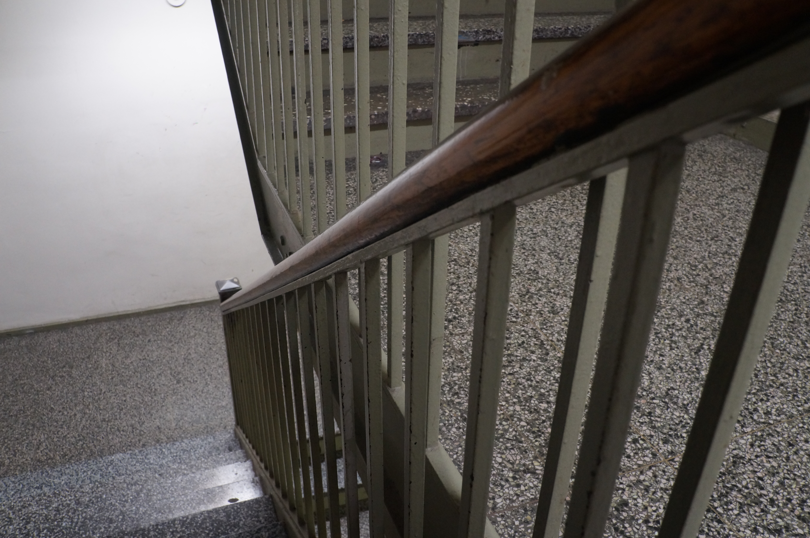
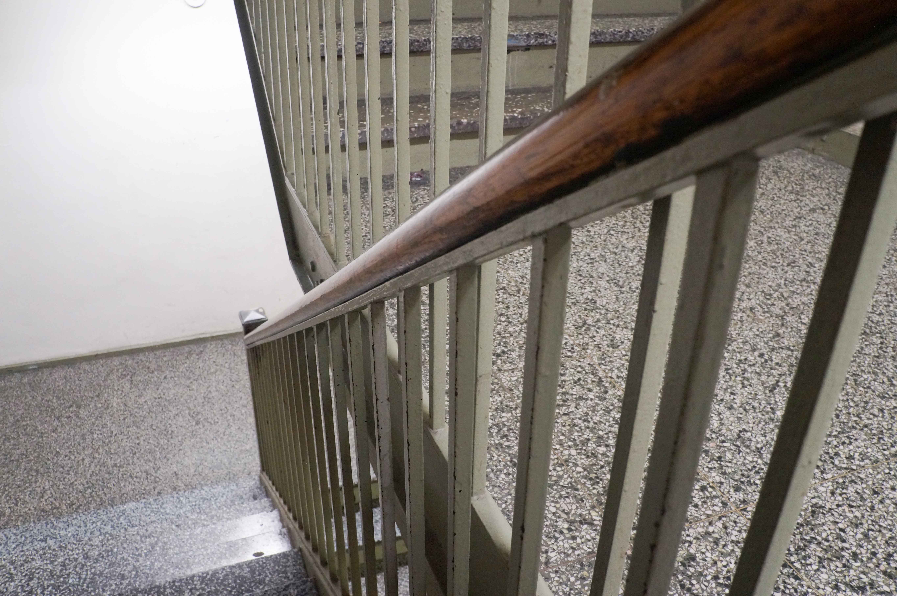
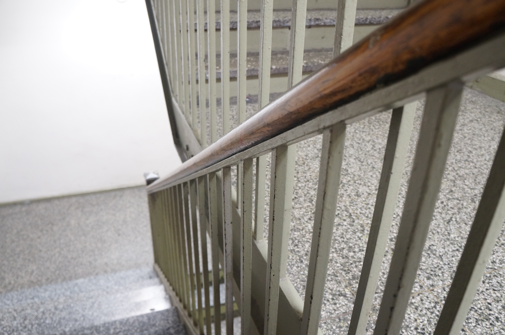
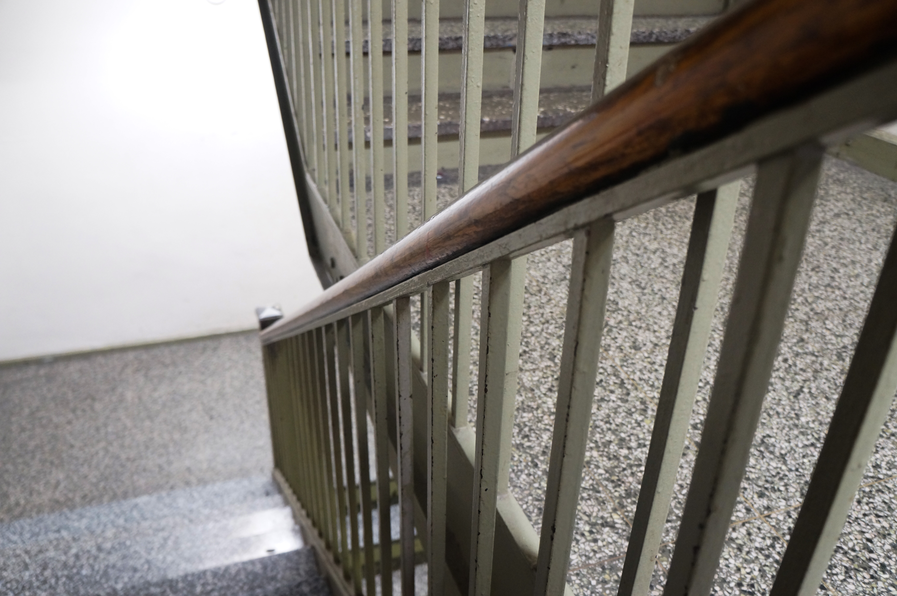

Tre Thompson
MEDPL 15000
Week 3 Depth of Field and Camera Raw
|
 DSC09322 Before
|
 DSC09322 After Camera Raw
|
|
 DSC09323 Before
|
 DSC09323 After Camera Raw
|

DSC09312 Before
|

DSC09312 After Blur Gallery
Simulated shallow depth of field with the station sign kept as the focal point. |
For these edits, I used Camera Raw on both staircase images to correct and balance the exposure based on what each image needed rather than applying the same settings to both. For DSC09322, I increased the exposure, contrast, shadows, and blacks to pull more information out of the darker areas while keeping the image readable. For DSC09323, I lowered the exposure slightly, increased contrast, adjusted shadows downward, and raised both whites and blacks to keep the handrail as the strongest visual point while maintaining detail in the surrounding stairwell.
For the 68th Street Hunter College station image, I used Blur Gallery to simulate a shallow depth of field effect while keeping the station sign as realistic and readable as possible. I kept the focal point on the sign area, then gradually increased the blur outward so the surrounding environment softened in stages rather than all at once. That made the image feel more controlled and selective, which changes how the viewer moves through the frame compared to the more documentary look of the original scene.